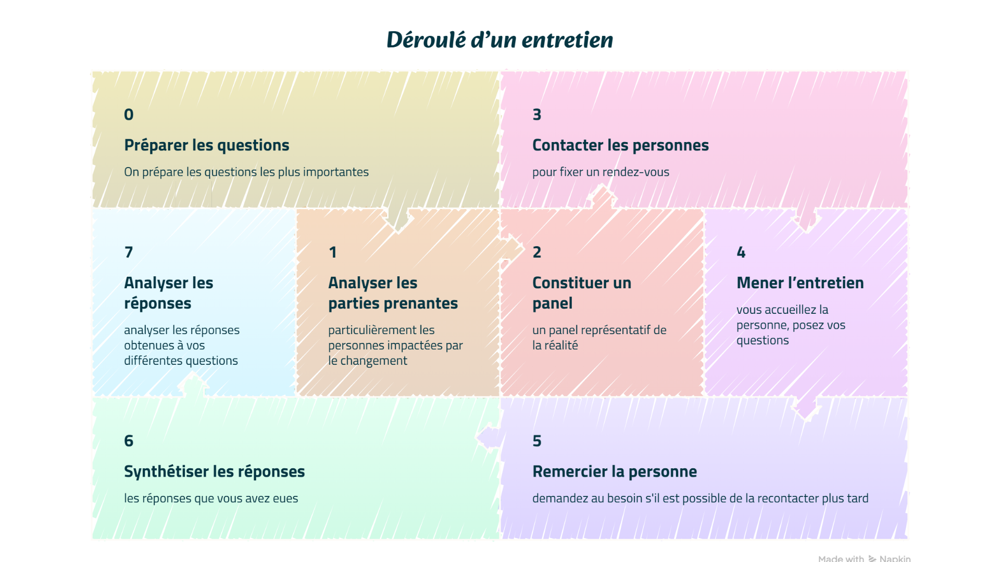

- But :
- Il s'agit d'une manière de collecter de l'information parmi un panel d'individus. L'entretien sert à poser des questions en 1-to-1 (ou à un petit groupe) pour avoir des réponses détaillées à ces questions.
- Requiert :
- Beaucoup de temps. Le choix d'un panel de personnes motivées et représentatif de la réalité.
- Présentation : L'entretien peut être enregistré pour ne pas perdre d'informations et il peut être couplé à un programme de retranscription
-
Déroulé d'un entretien :
(0) On prépare les questions les plus importantes, l'entretien peut être ouvert / semi-ouvert ou fermé (pas très recommandé dans ce cas, utilisez plutôt un questionnaire).
(1) On fait une analyse des stakeholders / particulièrement les personnes impactées par le changement.
(2) On essaye de constituer un panel représentatif de la réalité en impliquant certains membres de plusieurs des catégories de stakeholders. On peut rester vague au début (par exemple : 3 stakeholders de type A, 2 de type B et 2 de types C).
(3) On essaye de contacter certaines personnes membres de ces catégories pour fixer un rendez-vous, si c'est trop compliqué de cette manière c'est possible de faire par recommendation (à chaque fin d'interview vous demandez s'ils connaissent tels types de profil et demandez un ou plusieurs noms).
(4) Le jour J, pour chaque entretien vous accueillez la personne, posez vos questions et essayez de ne pas trop influencer son jugement.
(5) Vous remerciez la personne et demandez au besoin s'il est possible de la recontacter plus tard.
(6) Vous synthétiser les réponses que vous avez eues.
(7) Vous pouvez finalement analyser les réponses obtenues à vos différentes questions
Vous vous retrouvez donc avec une analyse de réponses à vos questions. - Use-Cases :
-
Tous types de projets impliquant des personnes. Il peut être utile sur des interrogations spécifiques, pour établir le scope du projet ou mieux comprendre les stakeholders et leurs besoins.
Quelques exemples :
(1) Un projet de mise à jour d'un programme nous a été affecté or on ne connaît pas bien les spécificités de ce programme.
(2) La mise en place d'une nouvelle application
(3) Un changement de structure organisationnelle - par exemple passer du fonctionnement en silos vers un fonctionnement en équipes mixtes.
- Exemple Concret : Reprenons le cas du changement de structure organisationnelle. Dans ce cas les entretiens peuvent être une bonne manière de comprendre les besoins de ces nouvelles équipes mixtes.
-
(0) Questions orientées besoins équipes, peut-être mieux comprendre certains profils également.
(1) Globalement impacte surtout les managers et travailleurs de ces silos destinés à changer.
(2) Représentativité des différents postes / fonctions (anciennement séparés en silos) et des rôles de ceux-ci (niveaux de managers, spécialistes et généralistes).
(3) Un huitième des personnes a répondu, on se concentre sur ceux-là en priorité et on fonctionne par recommandation.
(4-7) Ces étapes se passent bien mais prennent un peu plus de temps que prévu à cause du fixage des rendez-vous par recommandations. En contrepartie, les participants sont impliqués et plus enclins à participer.
Vous connaissez maintenant mieux les profils que vous méconnaissiez auparavant et avez eu des réponses quant aux besoins des équipes. Vous pouvez donc réfléchir à la constitution de ces équipes. -

- Exercice(s) d'entraînement :
- Essayez de préparer un guide d'entretien pour un projet qui vous est propre et interrogez quelques personnes ciblées par votre projet. Vous pouvez tester l'approche par recommandation si vous ne l'avez jamais fait. Essayez peut-être aussi de mettre en place le système qui vous permettra d'enregistrer et prendre note automatiquement pour qu'il soit prêt le jour ou vous en aurez besoin.
- Autre(s) lien(s) :
- /
- Source(s) :
-
1. Hayes John (2022). The theory and practice of change management - 6th edition, Macmillan Education Limited. (pp. 120-121).
2. Burnay Corentin (2024). Requirements Engineering Course. Unamur [Présentation orale et support de cours - slides].